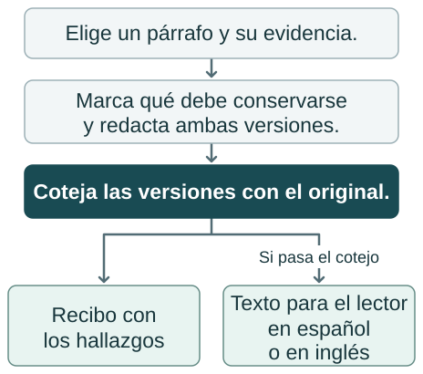

Scientific Writing Guardrail
Revisa un pasaje científico
Al editar o traducir un resultado, elige qué cifras, términos y condiciones deben conservarse. El programa coteja las versiones en español e inglés con el original y señala dónde volver a mirar.
Qué cuenta el inventario
El original registra 12 observaciones en 3 parcelas. Varias filas pueden corresponder al mismo organismo. Estos tres borradores ilustran hasta dónde llega el cotejo literal.
- 12 registros en 3 parcelas
- Pasa el cotejo. Cada cifra sigue junto a lo que cuenta.
- 13 registros en 3 parcelas
- Activa una alerta. Falta el 12 que el editor marcó en el original.
- 3 registros en 12 parcelas
- También pasa. Las dos cifras están presentes aunque sus significados se intercambiaron. El revisor debe reconstruir qué se contó y dónde.

Prueba el inventario en tu equipo
Necesitas Python 3.9 o posterior. Descomprime el ZIP y abre una terminal en la carpeta que contiene guardrail.py. Los comandos funcionan sin conexión.
- Lee el borrador en español.
python3 guardrail.py render examples/biodiversity/source.txt examples/biodiversity/packet.json --language es - Consulta el recibo para ver qué se comprobó.
python3 guardrail.py check examples/biodiversity/source.txt examples/biodiversity/packet.json
Si ves ready_for_human_review, las reglas declaradas pasaron. Falta que una persona revise la evidencia y el significado.